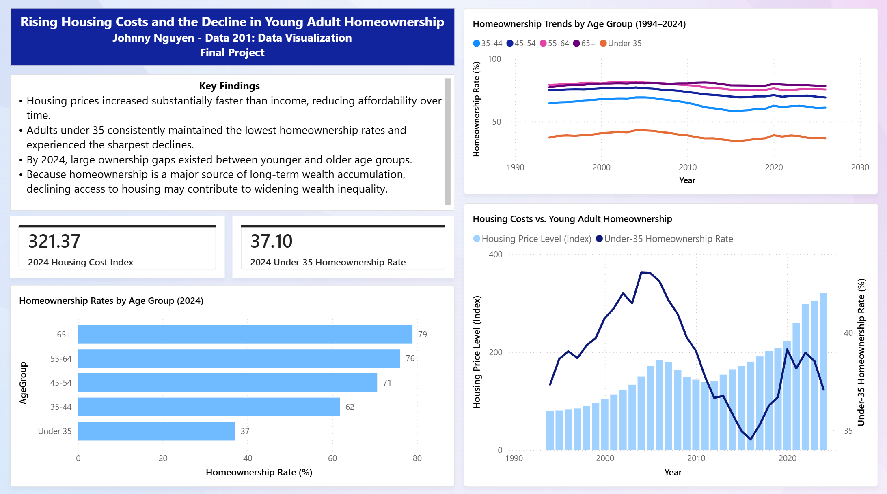
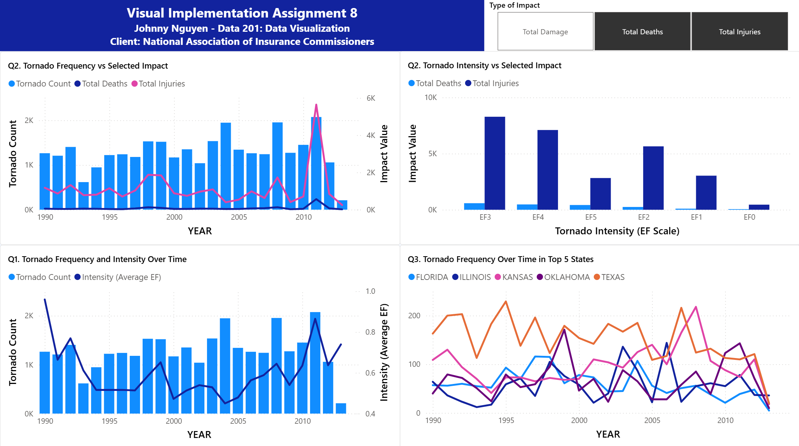
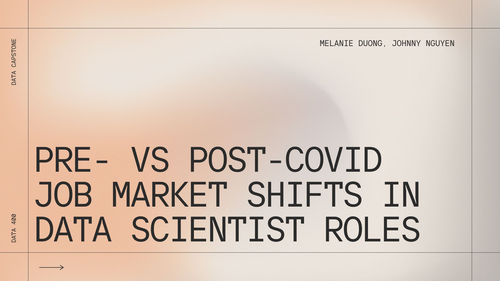

01 · Machine Learning
AI-Powered Workout Recommendations
A machine learning classification project exploring how structured fitness data can support personalized workout recommendations.
I'm Johnny Nguyen, a Data Analytics and Studio Art graduate working across analytics, data visualization, UI/UX, and creative technology.
A selection of analytics, machine learning, and visualization projects focused on practical questions and clear communication.
A machine learning classification project exploring how structured fitness data can support personalized workout recommendations.

A visual analysis of rising housing costs and the decline in young adult homeownership.
View project
An analytical dashboard designed to surface patterns in tornado impact and severity.
View project
A comparison of data scientist job-market patterns before and after the COVID-19 pandemic.
View projectInteractive products and web experiences where visual design, usability, and front-end thinking become the project itself.
A mobile-first bánh mì shop simulator designed and built for the web, with customer queues, ordering interactions, visual feedback, progression systems, and responsive UI.
Try the game outWebsite design work focused on giving a digital-services business a clearer, more professional online presence and easier path through its content.
Visit live siteI graduated from Dickinson College with a double major in Data Analytics and Studio Art. That combination shaped the way I approach problems: I care about whether an analysis is technically sound, but I also care about whether another person can understand and use it.
My work spans analytics, machine learning, visualization, web design, and interactive experiences. I'm especially interested in roles where data, product thinking, and visual communication overlap.